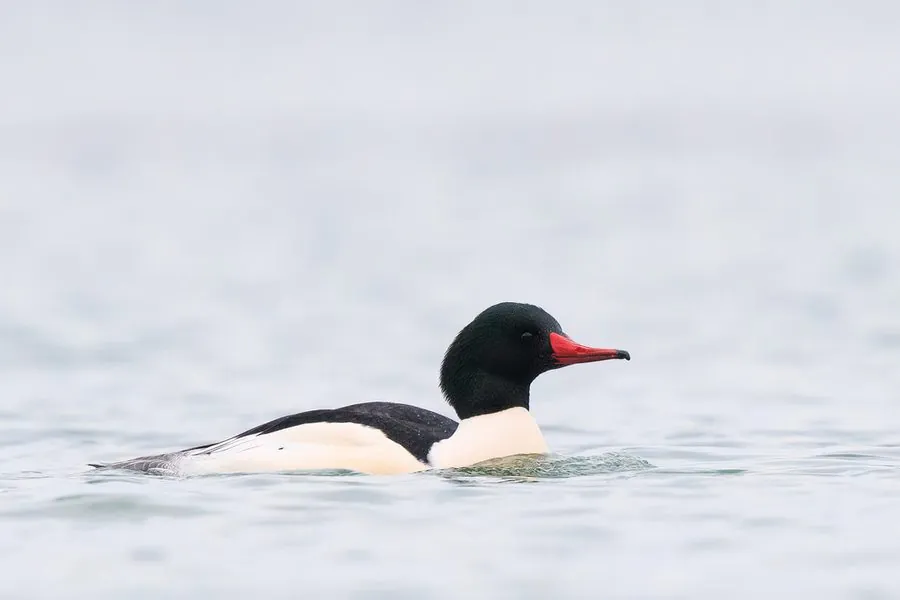

哺乳动物 · 动物界
狼獾 Gulo gulo

鼬科中体型最大的陆生种类，外形似小熊，腿短爪利，能长途跋涉撕食大型动物尸体，也敢抢夺猎物。
- 分类
- 门脊索动物门纲哺乳纲目食肉目科鼬科属貂熊属
- 栖息环境
- 北方针叶林与苔原，偏好荒凉寒冷、有大型有蹄类的区域
- 地理分布
- 斯堪的纳维亚、西伯利亚至北美洲北部，中国大兴安岭和新疆北部有少量分布
- 保护级别
- IUCN 无危（LC）；中国国家一级保护动物
物种志
狼獾体长 0.65–1.13 米，尾长 0.17–0.26 米，体重 9–25 kg，雄性明显大于雌性。它的体形粗壮，四肢短而强壮，前爪长、爪尖半伸缩，适合攀爬和挖掘；被毛为深褐色至黑色，身体两侧各有一条浅黄色至浅棕色的带纹，从肩部延伸到臀部。
狼獾分布于北半球的针叶林和苔原，从斯堪的纳维亚、俄罗斯西伯利亚到加拿大、美国阿拉斯加，中国仅见于大兴安岭和新疆北部。它多在晨昏和夜间单独活动，嗅觉极灵敏，常取食驯鹿、驼鹿等大型动物的尸体，也会捕杀小型兽类和鸟类，并以极强的咬合力咬开冻硬的骨肉。狼獾领地范围很大，可达数百平方千米，能长途跋涉；雌兽有延迟着床现象，妊娠期约 120–270 天，每胎 1–5 仔。因栖息地破碎和捕猎，中国境内种群极少，被列为国家一级保护动物。
形态与习性
- 食性大型动物尸体为主，也捕杀小型兽类和鸟类
- 体长0.65–1.13 m，尾长 0.17–0.26 m
- 体重9–25 kg，雄性明显大于雌性
- 寿命野外约 8–13 年
- 繁殖有延迟着床，妊娠期约 120–270 天，每胎 1–5 仔
- 咬合力可咬开冻硬的骨肉
- 领地范围可达数百平方千米，能长途跋涉
趣味知识
- 狼獾虽然只有中型犬大小，却能咬开冻硬的动物尸体。
- 它能长途跋涉数百千米寻找腐肉，嗅觉极其灵敏。
- 狼獾会攀爬树木，也会占据岩洞或雪洞作为巢穴。
- 中国境内狼獾数量极少，又被称为“貂熊”，列为一级保护动物。